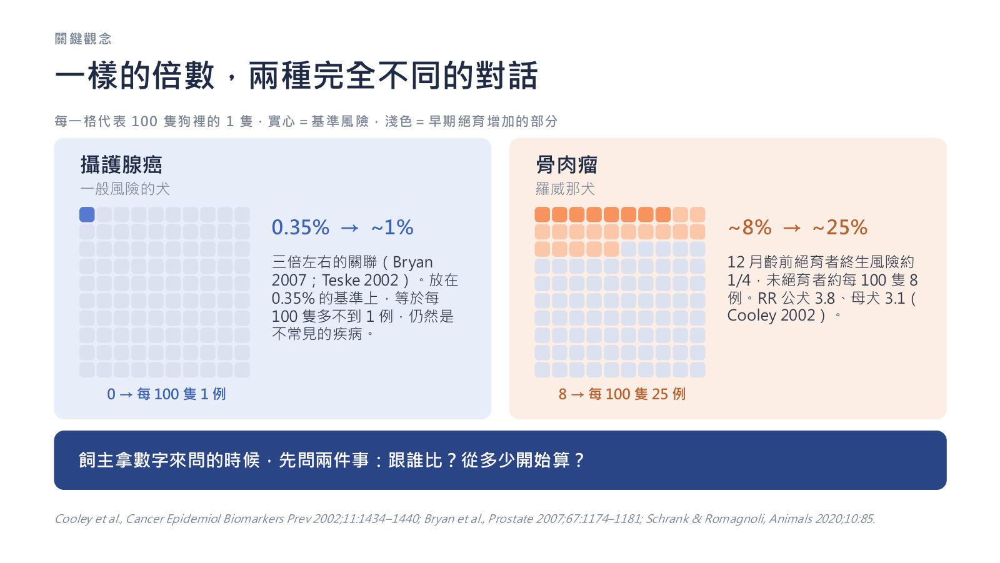
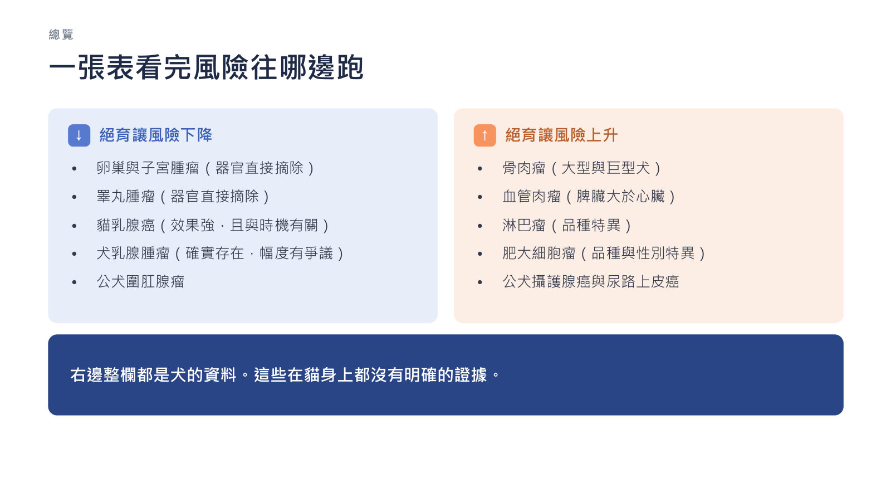
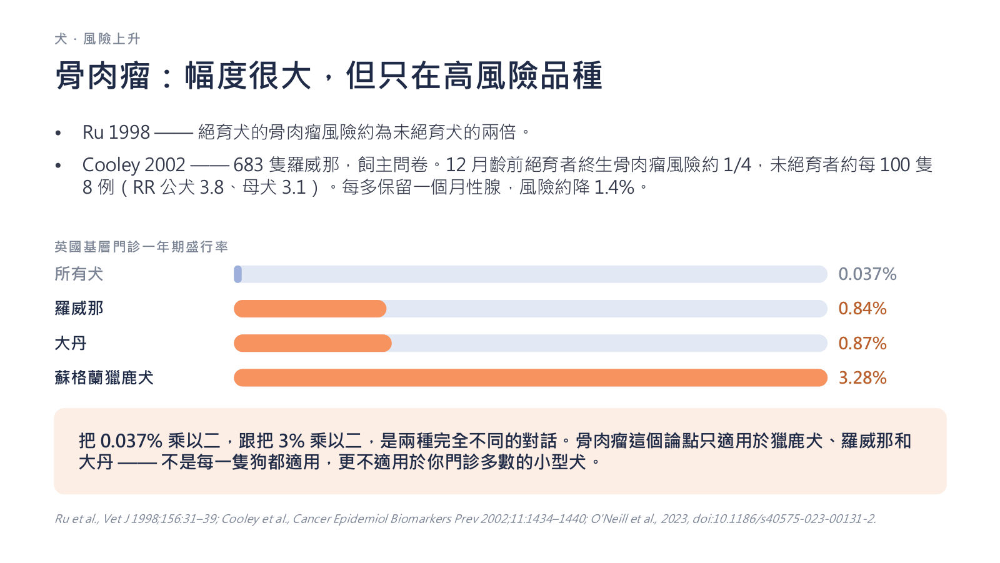
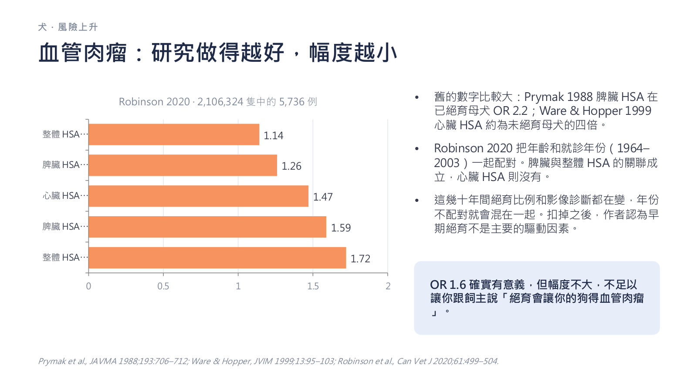
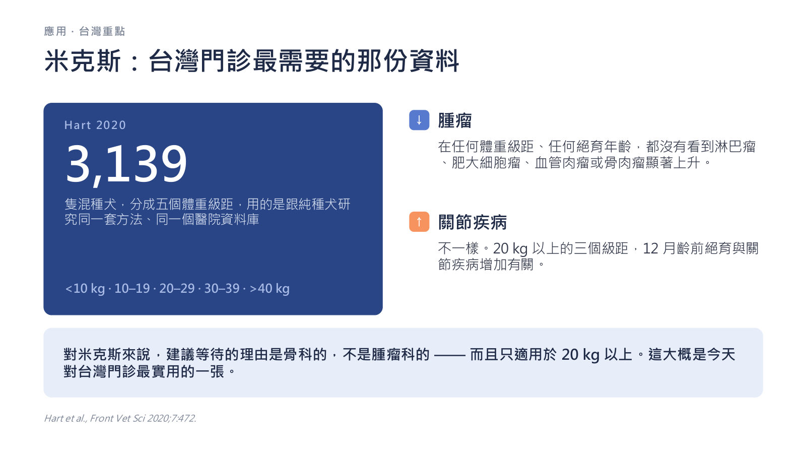

絕育與犬貓腫瘤風險：哪些說法有證據，哪些沒有
主講：Rita Ho, DVM（practice limited to oncology）
Neutering and cancer risk in dogs and cats｜90 分鐘繼續教育（投影片 39 張＋4 頁講義＋飼主版單張）｜場次 02
依講者的投影片與講義整理，沒有課堂錄音；投影片本身是中文，這裡以重點整理為主，數字與劑量照投影片。
⭐ 必記原則
- 在台灣「要不要」已由動保法第 22 條定調（不絕育須申報，違者罰 5–25 萬）；臨床判斷集中在「什麼時候」
- 所有關聯都來自觀察性研究，沒有任何絕育時機與腫瘤的 RCT；先問「跟誰比？從多少開始算？」
- 降：卵巢／子宮／睪丸腫瘤、貓乳腺癌（6 月齡前約降 91%）、犬乳腺腫瘤（幅度有爭議）、公犬圍肛腺瘤；子宮蓄膿雖非腫瘤卻是最重要理由之一
- 升（都是犬）：骨肉瘤（大型與巨型犬）、血管肉瘤（OR 約 1.6）、淋巴瘤與肥大細胞瘤（品種特異）、攝護腺癌與尿路上皮癌
- Schneider 1969 的 0.5%／8%／26% 是相對風險；保護效果大概是真的，精確百分比站不住腳
- 米克斯（Hart 2020，3,139 隻）：任何體重、任何絕育年齡，四種腫瘤都沒有顯著上升；≥ 20 kg 等待的理由是骨科的
- 小型犬時機可自己決定；貓 5 月齡前完成；收容所已絕育什麼都不用改
- 絕育犬平均死亡年齡 9.4 vs 7.9 歲：活得久本身就是癌症的風險因子；病歷寫「已說明利弊，飼主選擇 X」
台灣的前提與三個問題
▾門診常聽到的三句話
- 「繁殖者說不要那麼早結紮。」
- 「網路上說絕育會得骨癌。」
- 「領養的時候收容所已經先結紮了，這樣會不會傷到牠？」
上完這堂課要能：拆開飼主混著問的三個問題（要不要、什麼時候、用什麼方式）；說出哪些腫瘤風險降、哪些升、幅度多少；解釋為什麼品種和體型比手術日期更重要；給一個站得住腳、寫得進病歷的建議。
動保法：「要不要」已大致定調
- 動保法第 22 條第 3 項（104 年修正）：特定寵物（家犬貓）飼主應為寵物絕育；不絕育須向直轄市、縣（市）主管機關申報免絕育並提出繁殖管理說明
- 違反者依第 27 條處新臺幣 5 萬以上、25 萬以下罰鍰
- 各縣市另有絕育補助方案
法規決定了該不該做，沒有決定什麼時候做，時機仍是臨床判斷。
其實是三個問題
| 問題 | 重點 |
|---|---|
| 要不要 | 族群控制、子宮蓄膿、睪丸與卵巢腫瘤；台灣已有法規定調，很少爭議 |
| 什麼時候 | 幾乎所有爭議都在這裡；跟品種與體型有關，證據品質不一 |
| 用什麼方式 | 卵巢摘除 vs 卵巢子宮摘除、保留卵巢的絕育、輸精管結紮；長期腫瘤資料幾乎空白 |
台灣門診和歐美不一樣
- 品種資料幾乎全部來自歐美、以大型純種犬為主；Hart 品種表只有 40 個品種，台灣常見米克斯多查不到，台灣犬完全不在任何品種表內
- 風險上升大多集中在大型犬；對多數台灣病患，時機的影響比想像中小
- 混種犬的體重分級研究比品種表更貼近台灣（講者註明：台灣目前沒有可直接引用的犬種結構統計，請用自己診所的族群檢驗）
1. 文獻怎麼讀
▾絕育到底改變了什麼
- 性荷爾蒙降到接近零：乳腺與攝護腺的好處從這裡來
- LH 持續升高：失去負回饋；非性腺組織（包括犬脾臟 HSA 細胞）上也有 LH 受體
- 生長板閉合延後：青春期前絕育骨頭長得較長，是骨肉瘤可能的機轉之一
為什麼這些研究結論兜不攏
| 偏差 | 說明 |
|---|---|
| 轉診偏差 | 很多品種資料來自單一教學醫院，腫瘤為主的病例結構會高估發生率 |
| 年齡干擾 | 絕育犬活得比較久，沒有校正年齡的研究一定會找到關聯 |
| 沒有手術年齡 | 最大型資料庫只記錄有沒有絕育，回答不了時機問題 |
| 回憶與自願者偏差 | 常被引用的品種研究其實是品種俱樂部的飼主網路問卷 |
| 把相對當成絕對 | 0.35% × 3 和 12% × 3 是完全不同的兩件事 |
一樣的倍數，兩種完全不同的對話
| 基準 → 早期絕育 | 說明 | |
|---|---|---|
| 攝護腺癌（一般犬） | 0.35% → 約 1% | 約三倍（Bryan 2007；Teske 2002），每 100 隻多不到 1 例，仍然不常見 |
| 骨肉瘤（羅威那） | 約 8% → 約 25% | 12 月齡前絕育終生風險約 1/4；RR 公 3.8、母 3.1（Cooley 2002） |

飼主拿數字來問時，先問兩件事：跟誰比？從多少開始算？
2. 風險下降的部分
▾一張表看完風險往哪邊跑

犬乳腺腫瘤：大家都在引用的那組數字
| Schneider 1969 | 相對於未絕育母犬的風險 |
|---|---|
| 第一次發情前絕育 | 0.5% |
| 一次發情之後 | 8% |
| 兩次以上發情之後 | 26% |
- 這是相對風險，不是絕對機率，但幾乎每次都被當成絕對風險引用
- 1969 年單一病例對照研究，之後沒有人用現代方法重做
- Beauvais 2012：保護效果與絕育年齡效果的證據品質都弱；Guirguis & Beggs 2025：13 篇中 6 篇完全沒看到保護效果
- 但 Varney 2023（英國基層）：絕育母犬的 odds 只有未絕育的 1/5–1/2
結論：保護效果大概是真的，精確百分比站不住腳。跟飼主說「風險明顯下降，越早做效果越好」，不要背 0.5%。
器官拿掉就沒有的腫瘤，加上子宮蓄膿
- 卵巢、子宮、睪丸腫瘤：器官拿掉風險就不見，沒有時機爭議
- 子宮蓄膿不是腫瘤，但在未絕育母犬很常見而且會致命；支持絕育最重要的理由之一，談時機時容易被忘記
- 公犬圍肛腺瘤：雄性素依賴，去勢同時是預防也是治療
討論「要不要等」時，記得這一欄是「不做就一直存在」的風險。等，不是沒有代價。
貓：今天最站得住腳的保護效果
- 貓乳腺腫瘤 80–90% 惡性，淋巴結與肺轉移率高
- Overley 2005：未絕育母貓乳腺癌機會約為已絕育的 2.7 倍；依絕育年齡風險下降：6 月齡前約 91%、7–12 月齡約 86%、24 月齡後沒有
- 反方：2023 英國基層研究多變項分析沒看到關聯，也無法評估時機；幅度不確定，方向沒有爭議
- 貓乳腺以外的腫瘤沒有可信證據；6–8 週齡就可安全執行；AVMA 建議非繁殖用貓 5 月齡前完成
- 注射部位肉瘤（FISS）不是絕育的問題：與注射和佐劑有關，跟性腺無關
貓的臨床立場：5 月齡前完成；術後的體重管理才是真正要追蹤的事。
3. 風險上升的部分：一個一個看幅度
▾骨肉瘤：幅度很大，但只在高風險品種
- Ru 1998：絕育犬約為未絕育的兩倍
- Cooley 2002（683 隻羅威那，飼主問卷）：12 月齡前絕育終生風險約 1/4，未絕育約 8%；每多保留一個月性腺，風險約降 1.4%
| 英國基層一年期盛行率 | |
|---|---|
| 所有犬 | 0.037% |
| 羅威那 | 0.84% |
| 大丹 | 0.87% |
| 蘇格蘭獵鹿犬 | 3.28% |

這個論點只適用於獵鹿犬、羅威那和大丹，不適用於門診多數的小型犬。
血管肉瘤：研究做得越好，幅度越小
- 舊數字：Prymak 1988 脾臟 HSA 在已絕育母犬 OR 2.2；Ware & Hopper 1999 心臟 HSA 約為未絕育母犬四倍
- Robinson 2020（2,106,324 隻中 5,736 例）把年齡與就診年份一起配對：脾臟與整體 HSA 關聯成立（OR 1.14–1.72），心臟 HSA 則沒有；作者認為早期絕育不是主要驅動因素

OR 1.6 有意義但幅度不大，不足以跟飼主說「絕育會讓你的狗得血管肉瘤」。
💡 補充 血管肉瘤本身的診斷與治療見 01 血管肉瘤。
淋巴瘤與肥大細胞瘤：是參考依據，不是通則
| 品種 | 資料 |
|---|---|
| 黃金獵犬 | Torres de la Riva 2013（759 隻）：12 月齡前絕育的公犬淋巴肉瘤約高三倍；MCT 出現在 12 月齡後絕育的母犬；Hart 2020：母黃金不論幾歲絕育，至少一種腫瘤風險約為未絕育的 2–4 倍 |
| 維茲拉犬 | Zink 2014（2,505 隻）：不論哪個年齡絕育，MCT、淋巴瘤與所有腫瘤 odds 都較高；絕育越早診斷越早；但壽命沒有差別；資料來自匿名線上品種俱樂部問卷 |
用同樣方法做的拉布拉多幾乎沒有看到效果：不要把單一品種的資料套到你診間那隻狗身上。
公犬的攝護腺癌與尿路上皮癌
| 已去勢 vs 未去勢（Bryan 2007） | 勝算比 |
|---|---|
| 攝護腺 TCC | 8.00 |
| 膀胱 TCC | 3.56 |
| 所有攝護腺腫瘤 | 2.84 |
| 攝護腺腺癌 | 2.12 |
- Teske 2002：已去勢犬攝護腺癌 OR 4.34
- 發生率約 0.35%，乘以三到四倍仍是不常見的疾病
- 兩組診斷年齡接近，比較像促進發展而不是誘發腫瘤
去勢拿掉的是常見的良性攝護腺疾病，剩下少見的惡性疾病就顯得比較突出，這跟「造成這個病」不一樣。
難題：已絕育母犬長圍肛腺瘤
圍肛腺（hepatoid gland）腫瘤是雄性素依賴的；公犬風險是母犬的 5.6 倍（Hayes & Wilson 1977）。內源性雌激素似乎有保護作用，所以這類腫瘤在已絕育母犬反而相對常見。
| 荷爾蒙來源 | 怎麼查 |
|---|---|
| 1. 卵巢殘留 | 同一管血清驗 AMH＋progesterone；48 例組織學確診中，沒有一例兩者皆陰性 |
| 2. 腎上腺 | 分泌性荷爾蒙的腎上腺皮質腫瘤；cortisol 可能正常，要做 ACTH 刺激的性荷爾蒙套組＋影像 |
| 3. 外源性 | 問飼主自己身上擦了什麼 |
4. 品種、體型與整體壽命
▾決定答案的是品種，而且有表可查
- UC Davis（Hart）系列從 3 個品種擴到 40 個：黃金與拉布拉多（2013–14）、德國狼犬（2016）、35 個品種（2020）、再加 5 個大型品種（2024）
- 表給的是依品種與性別的「建議最早絕育年齡」，原則是不讓關節疾病或腫瘤風險超過該品種自己的基準值
- 小型品種：絕育後沒看到關節疾病上升；35 個品種中只有波士頓㹴與西施犬腫瘤顯著增加
- 大型與巨型品種：關節與腫瘤風險集中在這裡，延後手術的理由最清楚
把 Hart 的表存成書籤（Front Vet Sci 2020;7:388，開放取用），看診時直接打開；表上沒有的品種用體型與血緣相近的品種參考。
米克斯：台灣門診最需要的那份資料
- Hart 2020：3,139 隻混種犬，分五個體重級距（< 10、10–19、20–29、30–39、> 40 kg）
- 腫瘤：任何體重級距、任何絕育年齡，淋巴瘤、肥大細胞瘤、血管肉瘤、骨肉瘤都沒有顯著上升
- 關節疾病：20 kg 以上三個級距，12 月齡前絕育與關節疾病增加有關

對米克斯來說，建議等待的理由是骨科的，不是腫瘤科的，而且只適用於 20 kg 以上。
小型犬：台灣門診的主力
小型品種絕育後關節疾病沒有上升；混種犬 20 kg 以下兩個級距，關節與腫瘤都沒有顯著差異。可以誠實說：對多數台灣小型犬，時機可以自己決定。但「沒那麼嚴重」不等於「不用討論」：飼主問了就代表在意，談過並且記錄下來。
拉遠來看：絕育犬癌症比較多，但也活得比較久
- Hoffman 2013（70,574 隻）：平均死亡年齡未絕育 7.9 vs 已絕育 9.4 歲；預期壽命公犬 +13.8%、母犬 +26.3%
- 已絕育犬較常死於腫瘤與免疫媒介疾病；未絕育犬較常死於感染、外傷與血管疾病
- 八種腫瘤中七種在已絕育犬較多或持平，只有乳腺腫瘤較少；資料庫沒有絕育年齡，回答不了時機
活得久本身就是癌症的風險因子。推動絕育的人引用壽命那一半、反對早期絕育的人引用腫瘤那一半，兩半出自同一篇，而且不衝突。
5. 回到診間：五分鐘說得完的話
▾每一種病患該怎麼建議
| 病患 | 建議 |
|---|---|
| 貓（不分性別） | 5 月齡前完成；母貓乳腺獲益明確，沒有找到腫瘤上的壞處 |
| 小型犬 | 關節與腫瘤都是低風險；時間可以配合飼主 |
| 大型公犬、高骨肉瘤風險品種 | 可以考慮等過骨骼成熟；骨科與骨肉瘤兩個理由都要明講 |
| Hart 表上有的品種母犬 | 看診時直接打開表，兩邊的風險都讓飼主看到，由他自己權衡 |
| 米克斯 ≥ 20 kg | 等待的理由是骨科的；腫瘤證據不支持等待 |
| 收容所已絕育 | 什麼都不用改；不要製造罪惡感，該追蹤的照樣追蹤 |
記錄下來：「已說明絕育時機的利弊，飼主選擇 X」，這既是好的醫療，也是好的自保。
四句可以直接拿去用的話
| 飼主說 | 可以這樣回答 |
|---|---|
| 「絕育會致癌」 | 「少數幾種腫瘤確實有關聯，而且幅度通常不大，大概 1.5 倍，不是天差地別。以你家狗的品種和體型來看，影響大概是這樣。」 |
| 「我想等牠兩歲」 | 「某些品種這樣是合理的。但這也代表要處理發情期，並承擔子宮蓄膿的風險。我們一起看你比較能接受哪一邊。」 |
| 「收容所已經先結紮了」 | 「米克斯沒有證據顯示這樣會提高牠的癌症風險。如果牠長得比較大隻，我們會多留意關節，那才是資料真正支持的部分。」 |
| 「你會怎麼做？」 | 「我會查品種表，跟你家的狀況一起權衡，然後做一個我說得出理由的決定。我的建議是這樣，理由是這樣。」 |
用什麼方式：保留卵巢的絕育與輸精管結紮
- 做到：不能生育，但保留性腺荷爾蒙；輸精管結紮睪固酮驅動的行為也留著
- 沒做到：不會降低乳腺腫瘤、卵巢或睪丸腫瘤風險；殘留子宮組織仍可能發生殘端子宮蓄膿
- 還不知道：兩種術式都沒有長期腫瘤結果資料；保留荷爾蒙能不能抵銷今天講的風險，沒有研究做過
跟有意願、也理解的飼主討論是合理的，但目前證據不支持當成常規建議；保留荷爾蒙不等於避開癌症。
飼主版單張
講者另外做了一頁給飼主的單張「幫牠絕育，什麼時候最好？」，用白話整理預防什麼、可能稍微增加什麼、貓／小型犬／大型犬的時機建議、台灣的規定，並留了「我們為牠的建議」欄位可以填寫。
6. 三個病例
▾病例 1：8 歲米克斯母犬，右前肢跛行
已絕育、18 kg，跛行三週，X 光遠端橈骨溶蝕性病灶。飼主：「是不是因為我太早幫牠結紮？」
- 先確診，再談因果：還沒確診骨肉瘤，要先做細胞學或切片；先處理「接下來怎麼辦」
- 米克斯＋18 kg 指向同一答案：Hart 2020 混種犬任何體重、任何絕育年齡骨肉瘤都沒有顯著上升；10–19 kg 連關節那條也用不上
- 換成羅威那（基準 0.84%，是全犬 0.037% 的二十倍以上），Cooley 的數字才適用，但狗已發病，追究時機改變不了治療
順序：先確診，再給基準風險，最後才談歸因。
病例 2：4 個月大黃金獵犬公犬，飼主要求現在就做
剛從繁殖場帶回，家中兩名學齡兒童，怕行為問題、也怕記不住回診。
- 建議等：黃金是少數講得出理由的品種（Hart 2020 建議公金 1 歲後；Torres de la Riva 2013 早期絕育公金淋巴肉瘤約高三倍）
- 品種表是起點不是處方，飼主的條件還沒放進去
- 住公寓、處理不了標記、遊蕩、騎乘：那是真的限制；可折衷訂在 12 個月，中間排一次回診，把「記不記得」變成行程問題
寫進病歷：「已說明延後的理由與飼主的限制，雙方同意 X」。
病例 3：6 歲已絕育瑪爾濟斯母犬，肛門旁腫塊
三年前在別家醫院絕育，肛門左側 1.5 cm 腫塊，細胞學像圍肛腺腫瘤。
- 病理先做：只有圍肛腺瘤（腺瘤）是雄性素依賴的；腺癌與肛門囊頂漿腺癌不是
- 確認腺瘤後依序找：① 卵巢殘留（AMH＋progesterone）② 腎上腺（ACTH 刺激性荷爾蒙套組＋影像）③ 外源性
- 病理是腺癌就不走內分泌；病歷拿不到時，「有沒有切乾淨」只能靠血清驗
帶回診間的五件事
- 絕育會把腫瘤風險往兩個方向推；只講一邊不構成知情同意
- 風險上升的關聯絕對值大多不大，集中在特定品種與體型
- 品種和成犬體型比手術日期更能決定答案；用已發表的品種表
- 米克斯要等待的理由是骨科的，不是腫瘤科的，而且只在 20 kg 以上
- 貓在 5 月齡前完成；犬的時機爭議不適用於貓